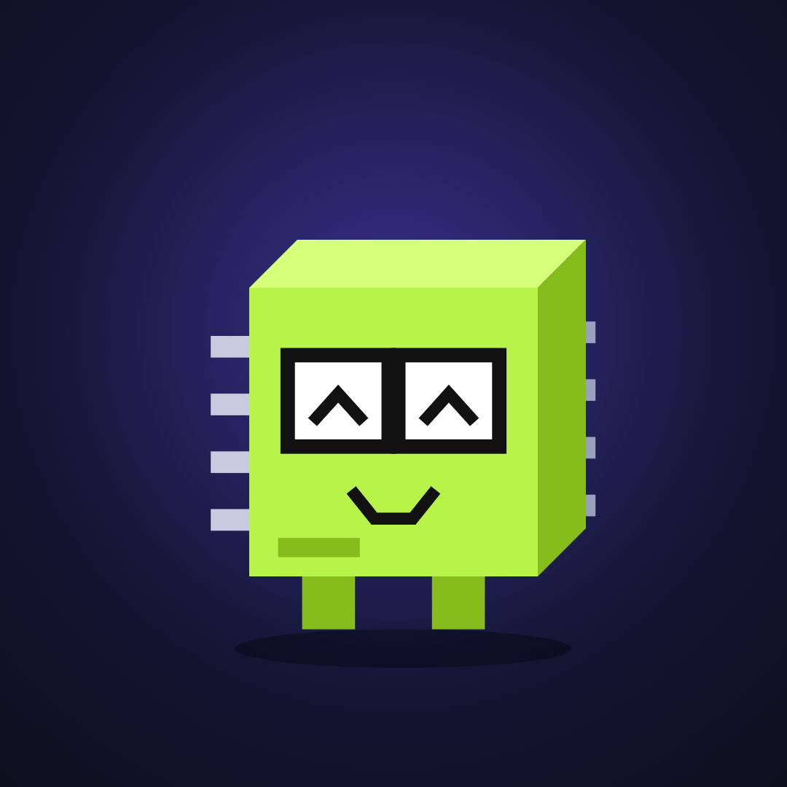

Bit NerdPolítica de Privacidade
Última atualização: 18 de novembro de 2026
1. Resumo
O aplicativo Bit Nerd é uma ferramenta interna do canal Bit Nerd. Ele só acessa a conta do próprio canal no TikTok, com a autorização dessa conta, para publicar os vídeos que o canal produz.
2. Dados que o aplicativo acessa
- Informações básicas do perfil do canal (identificador, nome de exibição e avatar), pelo escopo
user.info.basic, para confirmar qual conta está conectada. - Os tokens de acesso emitidos pelo TikTok, usados para publicar vídeos pelos escopos
video.uploadevideo.publish. - Os vídeos e legendas que o próprio canal cria e envia.
3. Onde os dados ficam
Os tokens e as informações do perfil ficam salvos apenas no computador do responsável pelo canal. Não existe servidor do aplicativo, banco de dados de usuários nem coleta de dados de outras pessoas.
4. Compartilhamento
Os dados não são vendidos nem compartilhados com terceiros. Os vídeos são enviados apenas ao TikTok (e ao Instagram, pela API oficial da Meta), para publicação no perfil do canal.
5. Revogar e apagar
O acesso pode ser revogado a qualquer momento em TikTok › Configurações e privacidade › Segurança e permissões › Apps e serviços. Ao revogar, os tokens salvos deixam de funcionar e são apagados do computador do canal.
6. Crianças
O aplicativo não é destinado a menores de idade e não coleta dados de crianças.
7. Contato
Mensagem direta para @bitnerd.ia no TikTok.